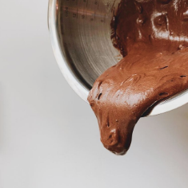

I've always had a sweet spot for chocolate desserts. There's just something about them that instantly lifts my mood, whether it's a rich brownie, a slice of cake, or even just a piece of chocolate. It's one of those simple things that can turn a stressful situation into something a little more manageable.
Chocolate itself comes from ancient civilizations like the Maya civilization, who used cacao for drinks. The dessert we know today developed much later, mainly in the United States during the 1800s. This became possible after cocoa powder was invented by Coenraad Johannes van Houten, making chocolate easier to use in baking

I've always liked strawberries, not just because they taste good, but because they're just so cute to me. The bright red color makes them look almost too pretty to eat, and the sweetness makes them even better. It's one of those fruits that feels both fun and comforting and the same time
Strawberries actually come from different parts of the world. Wild strawberries originally grew in places like North America and South America, where people had been eating them for a long time. The modern strawberry we eat today was later developed in France in the 1700s by crossing different wild species to create the sweeter, larger fruit we know now.